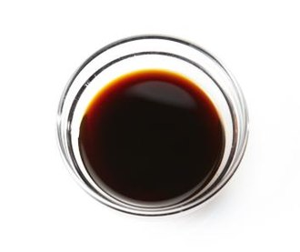

Soy sauce (American English), also spelled as soya sauce (British English), is a liquid condiment of Chinese origin, traditionally made from a fermented paste of soybeans, roasted grain, brine, and Aspergillus oryzae or Aspergillus sojae molds.
Soy sauce in its current form was created about 2,200 years ago during the Western Han dynasty of ancient China, and spread throughout East and Southeast Asia where it is used in cooking and as a condiment